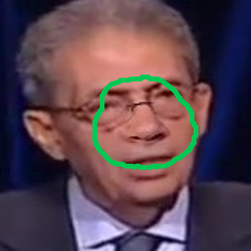
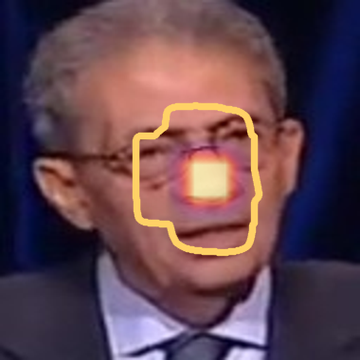
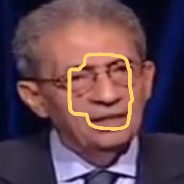
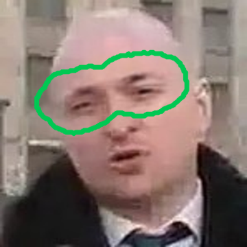
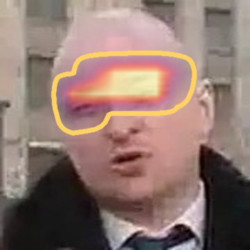
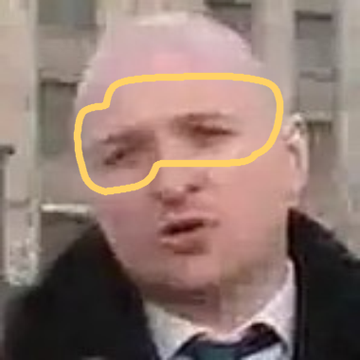

Held-out part-level forgeries: where the evidence is, and what restoring it does
input
true footprint
evidence map (ours)
Score-CAM (no head)
region restored
donor
nose



fake 1.00
→ real 0.95
SD-1.5
eyes



fake 1.00
→ real 0.60
green line: true footprint · yellow line: the region the map selects · heat: evidence or Score-CAM, opacity = value